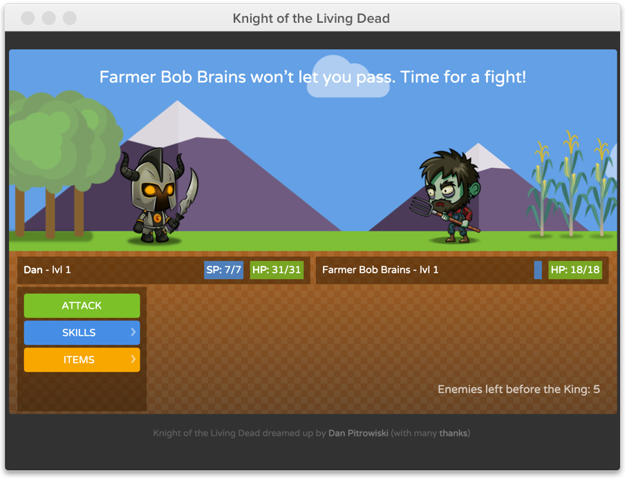
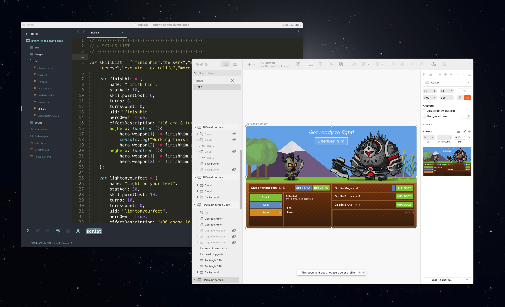
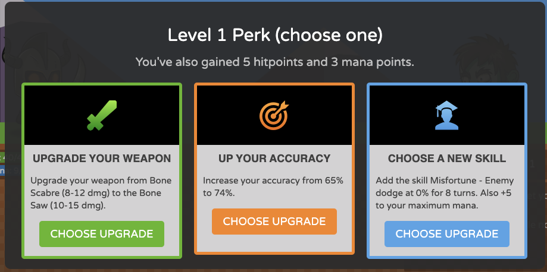

Knight of the Living Dead
- Genre
- Roguelike RPG, turn-based
- My role
- Designer and developer
- Released
- Feb 2016 (v1.6 in 2020)
- Designed in
- Sketch
- Built with
- HTML, CSS, JavaScript, jQuery
- Skills
- 11 playable
Side project
Overview
Knight of the Living Dead is a roguelike RPG inspired by games like Final Fantasy and Darkest Dungeon. You play the Undead Knight, fighting your way to the king to take back your kingdom.
The whole game runs in the browser, built with HTML, CSS, and jQuery. Players who make it to the end see weather effects: rain, thunder, and a darkening sky.
Design
Designing the game
I designed every screen in Sketch first, then built it as a web game. These are the features that make a game feel like a roguelike RPG, and the ones I designed around:
- Gaining skills, items, and power
- Turn-based gameplay
- New, unique monsters to fight
- A sense of randomness, so each game feels different
- Difficulty that increases as you progress

Goal
The goal
From the feedback I gathered, the feature people wanted most was cool skills to use. So the goal was a system where your character gains new skills, uses them in battle, and can understand what each one does. Each time you level up, you choose between upgrades, so no two runs build the same knight.

Build
The solution
Each skill is a JavaScript object that holds everything it needs: its name, cost, how many turns it lasts, its description, and the functions that apply and remove its effect. Keeping all of that in one place made it easy to create many different kinds of skills, and to rebalance them quickly during playtesting.
var keeneye = {
name: "Keen eye",
statAdj: 15,
skillpointCost: 3,
turns: 10,
turnsCount: 0,
uid: "keeneye",
heroOwns: false,
effectDescription: "+15% accuracy for 10 turns",
adjHero: function () {
hero.accuracy += keeneye.statAdj;
},
negHero: function () {
hero.accuracy -= keeneye.statAdj;
},
};The hardest part was tracking active skills and resetting the character when a skill ran out. That's what the adjHero and negHero functions are for: one applies the bonus, the other removes it.
Outcome
The outcome
The hero can use 11 different skills, and the code that manages them is only 35 lines long, thanks to the skill objects. This function runs every turn. It counts down each active skill, and when one ends, it resets the hero's stats and tells the player.
// Skill Counter and Set
function skillsSet() {
var count = skillList.length;
for (var i = 0; i < count; i++) {
if (eval(skillList[i]).turnsCount >= 1) {
eval(skillList[i]).turnsCount--;
if (eval(skillList[i]).turnsCount === 0) {
eval(skillList[i]).negHero();
var message = (eval(skillList[i]).name + "'s effects just wore off.");
alertMessage(message, null, false);
$('#' + eval(skillList[i]).uid).css('display', 'inherit');
}
}
}
}Try it
Play it
The game still runs in any modern browser. See how far you get before the king.